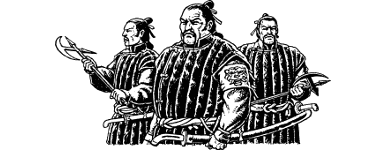

325
As the soldier approaches you realize that he is only aware of Prince Karvas. You have not been seen; the darkness and your innate Kai camouflage skills have kept you hidden from sight. Silently you sidestep into the shallow archway of an adjacent house and unsheathe your Kai Weapon. Karvas stands in the avenue, his eyes fixed on the approaching guard so as not to betray your presence. Nervously the soldier approaches the Prince with his spear levelled at his chest. He commands Karvas to state the name of his regiment, and when he refuses to reply, your Sixth Sense suddenly warns you that the guard is about to raise the alarm.
Like an attacking panther, you leap from the shadowy arch and strike the guard at the base of the neck with the hilt of your weapon. Without uttering a sound he crumples at the knees and falls unconscious to the ground. Quickly you and Karvas drag his body away from the avenue and hide it in an alleyway. Before you leave, you make a quick search of the soldier’s pockets and backpack and discover the following items:
- 30 Ren (equivalent to 3 Gold Crowns)
- Spear
- Sword
- Dagger
- Bottle of Rice Wine
- 1 Meal
- Ivory Comb
If you wish to keep any of these items, adjust your Action Chart accordingly.
You hurry away from the alley and continue along the avenue, past grimy two-storey houses of carved hardwood that are silent behind their bolts and shutters. It leads to a stone bridge that traverses the River Tehda and then continues into the heart of the east quarter. Here you almost collide with a patrol of armed guards which is marching towards the river, and hurriedly you are forced to take cover in a timber yard to avoid being seen. You observe the ten-strong patrol as it marches past. These men are clad in black quilted tunics and wide silk leggings, and they are armed with curved swords and hand-axes. All are almond-eyed and they have shiny black hair tied in a knot at the nape of their necks. Their leader, a stocky bull-necked sergeant, wears the emblem of Sejanoz emblazoned upon a scarlet armband. Patiently you wait for them to reach the bridge but, as they do so, another patrol comes marching along the avenue from the opposite direction. The east quarter of Bakhasa is a busy place even at this late hour. Rather than risk being seen and captured, you decide to remain hidden in the timber yard and attempt to get a few hours’ sleep before dawn.
{kind=link}

Unless you possess the Discipline of Grand Huntmastery, you must now eat a Meal or lose 3 ENDURANCE points.
To continue, turn to 340.